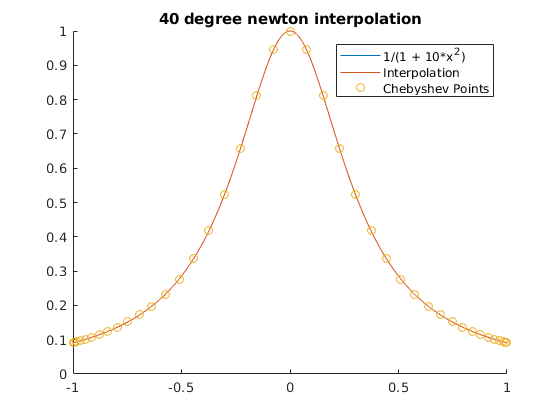
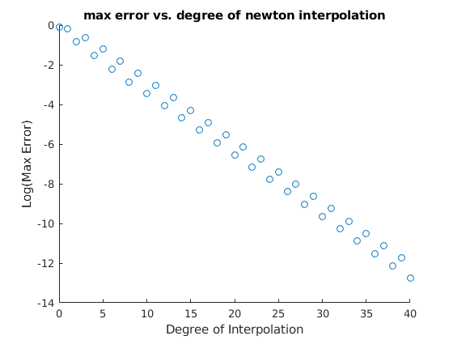
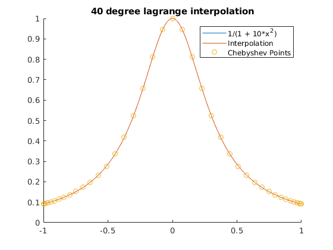
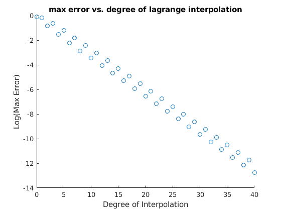

Zachary Kaplan
MATH 340 Assignment 7 3/2/18
Contents
Problem 1
f = @(x) 1./(1 + 10*x.^2); degs = 0:40; a = -1; b = 1; X = linspace(a, b, 1e3); for type = {'newton', 'lagrange'} max_err = zeros(size(degs)); for n = degs [p,points] = cheb(a, b, f, n, type{1}); YP = p(X); YF = f(X); max_err(n - degs(1) + 1) = norm(YF - YP, Inf); end figure hold on; plot(X, YF); % The function. plot(X, YP); % The interpolation. scatter(points(:,1), points(:,2)); % Chebyshev points. title(sprintf('%d degree %s interpolation', n, type{1})); legend('1/(1 + 10*x^2)', 'Interpolation', 'Chebyshev Points') figure scatter(degs, log(max_err)); title(sprintf('max error vs. degree of %s interpolation', type{1})); xlabel('Degree of Interpolation'); ylabel('Log(Max Error)'); end fprintf('Functions Used:\n'); dbtype cheb; dbtype lpfit; dbtype npfit;
Functions Used:
1 function [p, points] = cheb(a, b, f, n, type)
2 % cheb uses chebyshev nodes for interpolating f with a degree n polynomial.
3 % type has two valid values: 'newton' and 'lagrange'.
4
5 X = (a + b)/2 + (a - b)/2 * cos((2*(1:n+1) - 1)./(2*n + 2) * pi);
6 Y = f(X);
7
8 if strcmp(type, 'newton')
9 p = npfit(X, Y);
10 elseif strcmp(type, 'lagrange')
11 p = lpfit(X, Y);
12 else
13 error(['invalid type ' type ]);
14 end
15 points = [X' Y'];
16 end
1 function Pn = lpfit(X, Y)
2 % pfit finds the polynomial fitting points defined by the cocentric vectors
3 % X and Y. NB: X and Y must have the same length.
4
5 % Force X to be a row vec.
6 X = reshape(X, 1, length(X));
7 % Force Y to be a row vec.
8 Y = reshape(Y, 1, length(Y));
9
10 function y = pn(x)
11 y = 0;
12 for i = 1:length(X)
13 % The i'th column of y is Li evaluated on each input x.
14 y = y + Y(i)*lagrange(x, i, X);
15 end
16 y = reshape(y, size(x));
17 end
18
19 Pn = @pn;
20 end
21
22 function y = lagrange(x, i, X)
23 % lagrange returns the ith Lagrange function from the length(X) - 1 order
24 % Lagrange basis as defined by vector X evaluated at x
25 % NB: X must be a row vector.
26 % returns y as a column vector.
27
28 % Force x to be a col vec.
29 x = reshape(x, length(x), 1);
30
31 % \Pi_{j = 1, j \not= i}^{|X|} (x - X_j)/(X_i - X_j)
32 skip = [X(1:i-1) X(i+1:end)]; % skips X(i)
33 % The below uses matlab R2017's ability to automatically repmat matrix
34 % arguments to binary matrix operators. MAY NOT WORK IN R2016.
35 y = prod((x - skip)./(X(i) - skip), 2); % Product along column dimension
36 end
1 function Pn = npfit(X, Y)
2 % pfit finds the polynomial fitting points defined by the cocentric vectors
3 % X and Y. NB: X and Y must have the same length.
4
5 % Force X to be a row vec.
6 X = reshape(X, 1, length(X));
7 % Force Y to be a row vec.
8 Y = reshape(Y, 1, length(Y));
9
10 % Initialize memoization for dd (NxN mat).
11 mem = NaN(length(X));
12
13 function y = pn(x)
14 y = 0;
15 for i = 1:length(X)
16 [diff, mem] = dd(1, i, X, Y, mem);
17 % The i'th column of y is Ni evaluated on each input x,
18 % multiplied by [y_1, ..., y_i]
19 y = y + diff*newton(x, i, X);
20 end
21 y = reshape(y, size(x));
22 end
23
24 Pn = @pn;
25 end
26
27 function ni = newton(x, i, X)
28 % newton returns the ith Newton function from the length(X) - 1 order
29 % Newton basis as defined by vector X evaluated at x
30 % NB: X must be a row vector.
31 % returns y as a column vector.
32
33 % Force x to be a col vec.
34 x = reshape(x, length(x), 1);
35
36 % \Pi_{j = 1}^{i-1} (x - X_j)
37 ni = prod(x - X(1:i-1), 2); % Product along column dimension
38 end
39
40 function [diff, mem] = dd(i, j, X, Y, mem)
41 % dd returns the divided difference [Y_i, ..., Y_j] with points (X_i, Y_i)
42
43 % Handle error case
44 if i > j
45 error('i may not exceed j');
46 end
47
48 % Check memoization
49 if not(isnan(mem(i, j)))
50 diff = mem(i, j);
51 return
52 end
53
54 % Compute unknown value
55 if i == j
56 diff = Y(i);
57 else
58 [ld, mem] = dd(i+1, j, X, Y, mem);
59 [rd, mem] = dd(i, j-1, X, Y, mem);
60 diff = (ld - rd) / (X(j) - X(i));
61 end
62 mem(i, j) = diff;
63 end
   